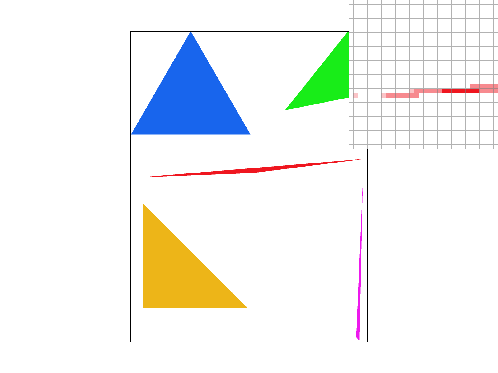
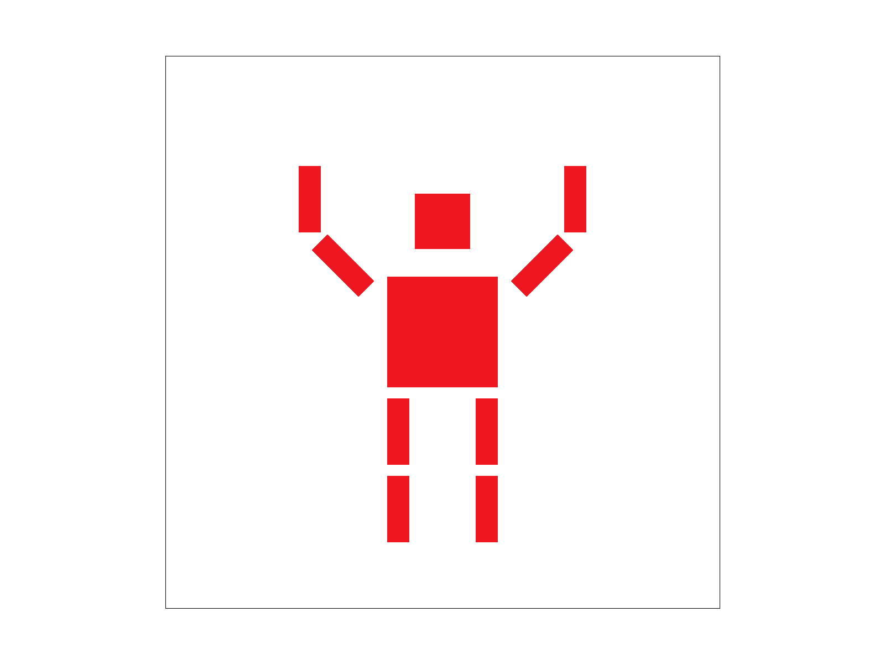
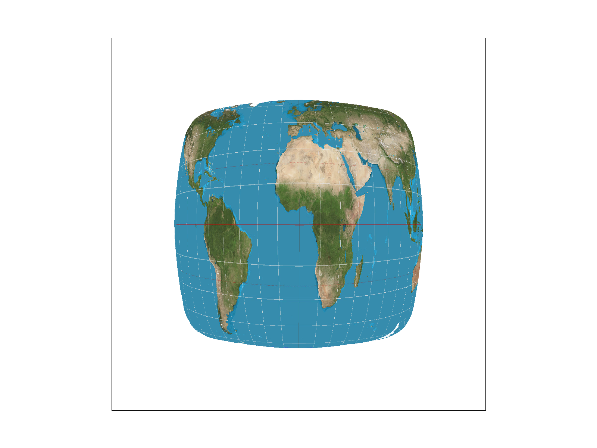
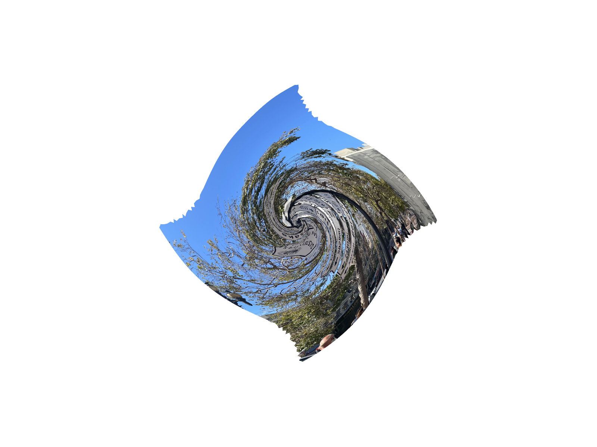
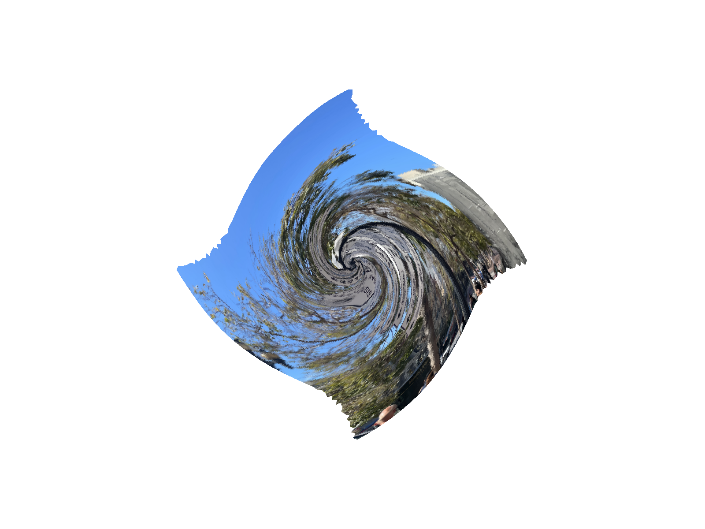

Overview
In this project, starting from simple rasterization to texture sampling, we implemented multiple rasterization techniques that we learned in class. The methods we implemented include super-sampling, bilinear/nearest pixel sampling and bilinear/nearest level sampling. We also implemented Barycentric coordinates and transformations. One interesting thing about the project is that we keep building new techniques on top of previous tasks, which help us deeply understand how to code each technique and the performance of each technique.
Section I: Rasterization
Part 1: Rasterizing single-color triangles
Our algorithm takes in x, y positions of the three vertices as input. From these three vertices, the algorithm first calculates the minimum x, y values and the maximum x, y values. Then, it uses double for-loops to traverse through every pixel between the minimum x, y values and the maximum x, y values. For every pixel, the algorithm samples the point and checks if the point passes the three line tests. If successful, it will color the pixel at this position in the sample buffer.
Our algorithm is no worse than one that checks each sample within the bounding box of the triangle. By calculating the minimum and maximum x, y values and traversing through samples within this constraint, the algorithm tries to find the smallest rectangle that covers the triangle, which is the bounding box of the triangle.
The interesting part of this picture is that, when we look at the red triangle, there are a few disconnected red pixels.
Part 2: Antialiasing triangles
The supersampling algorithm implements the supersampling procedure by using the sample buffer as its main data structure, which is already declared within the code. However, to enable the algorithm, we need to resize the sample buffer through multiplying the original size by the sample rate. The algorithm works as follows. Just like Task 1, it calculates the minimum and maximum x, y values from the three vertices and then traverses through each pixel within the constraint. For each pixel, it separates into smaller square regions based on the sample rate. For example, if the sample rate is 16, the pixel will separate into 4 x 4 square grid, with the total number of square regions being 16. The algorithm traverses through each region within the pixel, samples the point, and checks the point against the three lines tests. If the sample point passes the test, then the algorithm finds and colors the corresponding position in the sample buffer.
The average down procedure is implemented in the function resolve_to_framebuffer. Basically, for each pixel in the frame buffer, we find the corresponding supersamples in the larger smaple buffer. We take average of the colors in those locations and then color the pixel in the frame buffer with the average r, g, b values.
Besides rasterize_triangle and resolve_to_framebuffer, there are other modifications made to the rasterrization pipeline. In the functions set_sample_rate and set_framebuffer_target, we resize the sample buffer through multiplying the original size by the sample rate. In addition, in the function fill_pixel, the coloring of points & lines shall not be affected by supersampling. Thus, to take this into account, we create a a condition that, if the thing to fill pixel to is a point or a line (not a triangle), we will fill all the supersamples corresponding to the point or line with the same color.
Supersampling is useful because it can attenuate high signal frequencies and produce images with smoother edges, as you can see from the pictures shown below.
|
|

|
|
From the pictures shown above, we can see that, as we increase the sample rate, the pixels at the corner of the red triangle become connected with other red pixels. This is the effect of supersampling. Originally, when the sample rate is 1, we only look at one sample point within each pixel. If the point isn't in the triangle, we simply won't color the pixel. However, as we uses supersampling, we sample multiple points throughout the region within the pixel. Some of these points are within the triangle, and so we color the corresponding pixel based on the percentage. As we increase the sample rate, we sample more points within one pixel, and it is more likely that some of them are in the triangle and the corresponding pixel gets colored. Therefore, supersampling gives us more leniency when it comes to draw color on one pixel, and it is evident in the pictures shown above.
Part 3: Transforms
|

|
|
Super Bowl is coming up, so it is nice to have the cubeman showing a touchdown signal!
Section II: Sampling
Part 4: Barycentric coordinates
The picture above shows a triangle with three vertices in different colors, and we want to interpolate color values smoothly across the surface of the triangle, just like the picture shown above. In this case, we use barycentric coordinates because, given one point, barycentric coordinates measure how close this point to three vertices of the triangle, generating three coefficients, alpha, beta, and gamma. With these three coefficients, we color the point with the weighted sum of the three vertex colors. Ultimately, it leads to a smoothly blended color triangle after traversing through each point within the triangle using Barycentric coordinates.

Part 5: "Pixel sampling" for texture mapping
Pixel sampling, in my opinion, is that getting the color value for each pixel that is inside the shape. Pixel sampling would go through all the points inside the shape, then get the color value from a specific function. Texture mapping is a similar idea and the only difference is that the color value here is calculated by the texture sample function. The texture sample will use the coordinate to get the corresponding color value in the mipmap. I implemented by 1) converting the x, y value to the u, v coordinate, 2) use either nearest or bilinear inside texture class to get the color value from mipmap.
Nearest neighbor is picking the closet closest texels (pixels in the texture) in the u, v coordinate and return its value. The bilinear will interpolate between the four closest texels (pixels in the texture) to (u,v) point. The bilinear sampling will perform better in most cases because it will show more accurately by using four closest texels instead of one and it also applies interpolation.
|

|

|
|
|
|
We can see that nearest performs much worse when there is only 1 sample per pixel. However, the difference between nearest and bilinear decreases when there are 16 sample per pixel. I think it is because nearest method will have a lot of discontinued lines when there is only 1 sample per pixel. When there are supersampling, this problem will be less and less obvious.
Part 6: "Level sampling" with mipmaps for texture mapping
Level sampling is to use different level of texture pixel for different samples. What I did is to calculate the mipmap level according to the du/dx, du/dy, dv/dx and dv/dy. For nearest level, I use the level that closest to my calculated level value. For the linear one, I use the level as a continuous number. I will calulate the texel at two levels and then apply the lerp function on them.
To compare three sampling techniques, I think they are good at different aspects. First of all, they are all good at antialiasing. Pixel sampling or level sampling will likely use less memory and be much quicker then increaseing the number of samples per pixel. The nearst sampling will be the quickest since it will calculate one value per pixel still. The bilinear will be second since it might calculate 4 or 8 values per pixel. And the supersampling will be the slowest. But the antialiasing power might be strongest for multiple samples pixel since it will use at most 16 samples per pixel.
|

|
|
|
|

|
Overall, the L_NEAREST - P_LINEAR is the best. Using L_ZERO will have a lot of jagging effect when you look at the top two pictures. Using the P_NEAREST will show some unnatural edges when you look at the left two pictures.
Section III: Art Competition
If you are not participating in the optional art competition, don't worry about this section!